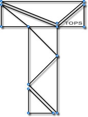

Main Page
Namespaces
Classes
Files
Related Pages

C++ Topological operators for 2D manifold manipulation.
1.0
Introduction
Overview
Data Structures
Objects and Operators
Building a Mesh
A Simple Example
Download and Compiling
License
Acknowledgements
References
Generated on Fri Feb 24 12:23:21 2006 for TOPs by
1.4.6-NO